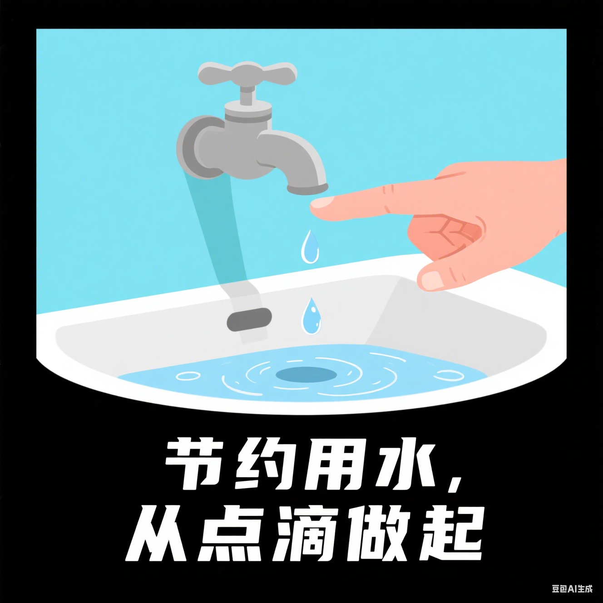
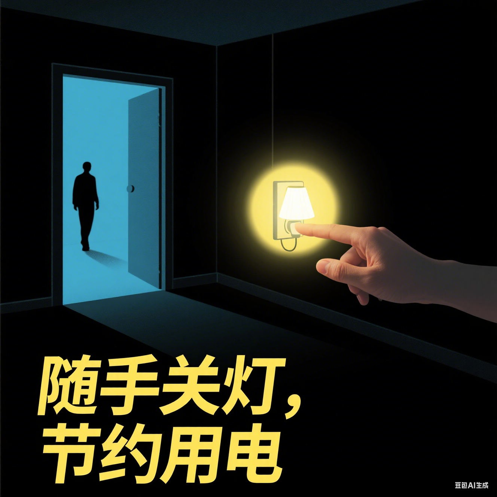
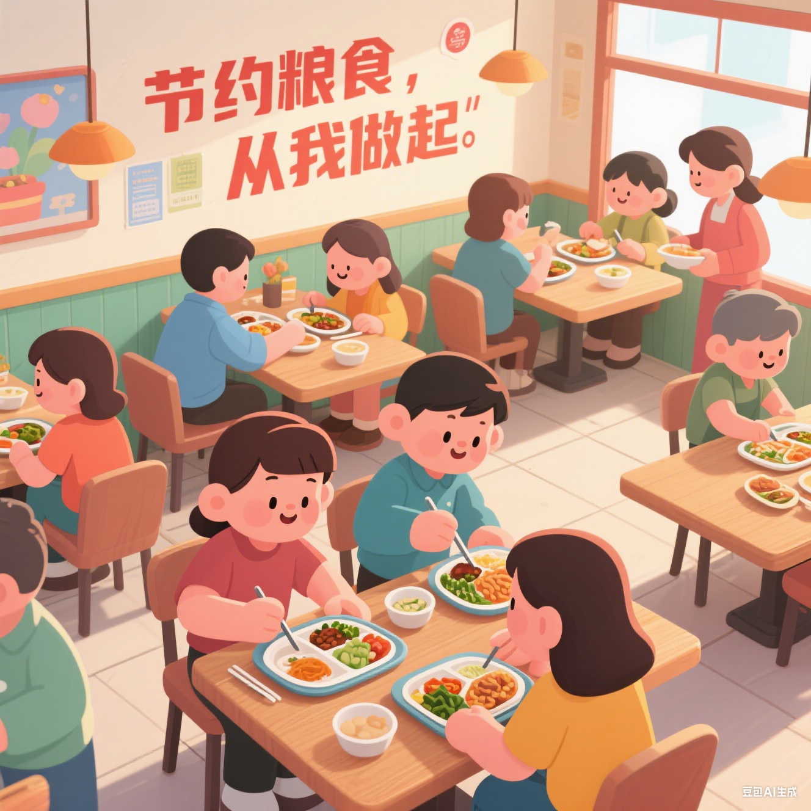

节约用水

节约用水：从清晨洗漱时的间断开水，到洗菜水二次冲厕，举手之劳里藏着对水资源的敬畏。全球超 10 亿人面临缺水困境，别让 “细水长流”
成为记忆。每一次及时关紧的水龙头，每一次合理的循环用水，都是在为干涸的土地储备生机，为后代留存江河的馈赠。
节约用电

节约用电：夜晚离开房间时的随手关灯，空调设置在
26℃的舒适区间，这些微小习惯实则重若千钧。一度电可供冰箱运转一整天，也能让节能灯亮半月有余。电是现代生活的血液，却非取之不尽，珍惜每度电，就是在守护能源可持续的循环，让光明与温暖长久延续。
节约粮食

节约粮食：食堂里少取一勺的自觉，餐桌上打包剩菜的习惯，都是对 “盘中餐” 的最好致敬。从播种到收获，每粒粮食都历经数十道工序，凝聚着农人烈日下的辛劳。杜绝
“舌尖上的浪费”，不仅是对劳动的尊重，更是在为全球粮食安全添砖加瓦，让 “温饱” 二字永远坚实。